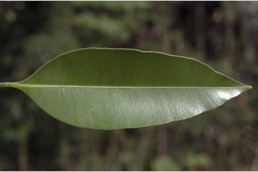
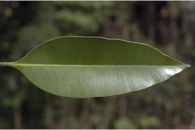
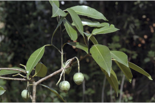
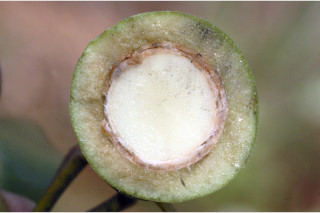
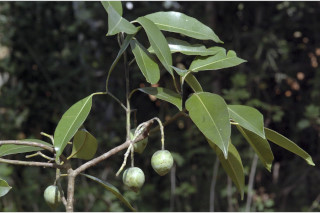
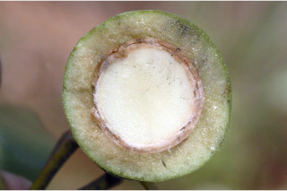

Tall trees, up to 35 m tall.
35ಮೀ ಎತ್ತರದವರೆಗೆ ಬೆಳೆಯುವ ದೊಡ್ಡ ಗಾತ್ರದ ಮರಗಳು.
35 മീറ്റര് വരെ ഉയരത്തില് വളരുന്ന വന് മരങ്ങള്.
மிக உயரமான மரங்கள், 35 மீ. உயரமுடையது.
Outer bark yellowish, with strong boat shape fissures; inner bark fibrous; blaze reddish.
ಹೊರ ತೊಗಟೆ ಹಳದಿ ಬಣ್ಣದಲ್ಲಿದ್ದು ಬಲಿಷ್ಠವಾದ ದೋಣಿಯಾಕಾರದ ಸೀಳಿಕೆಗಳನ್ನು ಹೊಂದಿರುತ್ತದೆ; ಒಳತೊಗಟೆ ನಾರು ರೂಪ; ಕಚ್ಚು ಮಾಡಿದ ಜಾಗ ಕೆಂಪಾಗಿರುತ್ತದೆ.
തോണിയുടെ ആകൃതിയുള്ള, ആഴമേറിയ വിള്ളലുകളോടുകൂടിയ, മഞ്ഞനിറത്തിലുള്ള പുറംതൊലി; നാരുപോലുള്ള അകംതൊലി; വെട്ട്പാടിന് ചുവപ്പ് നിറം.
மரத்தின் பட்டை வெளிப்புறத்தில் மஞ்சள் நிறமானவை, நன்கு படகு போன்ற பிளவுகளுடையது; உள்பட்டை நார் போன்றது, சிவப்பு நிறமானது.
Branchlets quadrangular, glabrous.
ಕಿರುಕೊಂಬೆಗಳು ನಾಲ್ಕು ಕೋನಗಳನ್ನು ಹೊಂದಿರುತ್ತವೆ ಹಾಗೂ ರೋಮರಹಿತವಾಗಿರುತ್ತವೆ.
അരോമിലവും, ചതുഷ്കോണോടുകൂടിയതുമായ, ഉപശാഖകള്.
சிறிய நுனிக்கிளைகள் குறுக்குவெட்டுத் தோற்றத்தில் நான்கு கோணங்களுடையது, உரோமங்களுடையது.
Latex watery turning yellowish, not profuse.
ಸಸ್ಯಕ್ಷೀರ ವಿರಳವಾಗಿದ್ದು,ಜಲರೂಪಿಯಾಗಿದ್ದು ನಂತರ ಹಳದಿ ಬಣ್ಣಕ್ಕೆ ತಿರುಗುತ್ತದೆ .
മഞ്ഞനിറമാകുന്ന, ഏറെ സമൃദ്ധമല്ലാത്ത, ജലമയമായ സ്രവം.
சாறு நீரைப் போன்றது, உலரும் போது மஞ்சள் நிறமானது, குறைந்தளவே உண்டாகின்றது.
Leaves simple, opposite, decussate; petiole 0.8-2.5 cm long, planoconvex in cross section, glabrescent; lamina 5-9 x 2-4 cm, elliptic-lanceolate, apex acute to acuminate, base usually attenuate, sometimes acute, coriaceous; secondary_nerves many, close, parallel, nearly right angle to midrib, terminating at thick margin.
ಎಲೆಗಳು ಸರಳವಾಗಿದ್ದು,ಕತ್ತರಿಯಾಕಾರದ ಅಭಿಮುಖ ಜೋಡನಾ ವ್ಯವಸ್ಥೆಯಲ್ಲಿರುತ್ತವೆ; ಎಲೆತೊಟ್ಟು 0.8 ರಿಂದ 2.5 ಸೆಂ.ಮೀ ಉದ್ದವಾಗಿದ್ದು, ಅಡ್ಡಸೀಳಿದಾಗ ಸಪಾಟ ಪೀನಮಧ್ಯ ಆಕಾರ ಹೊಂದಿರುತ್ತವೆ ಹಾಗೂ ಉದುರು ರೋಮಗಳಿಂದ ಆವೃತವಾಗಿರುತ್ತವೆ; ಎಲೆಪತ್ರಗಳು 5 -9 X 2 - 4 ಸೆಂ.ಮೀ ಗಾತ್ರ ಹೊಂದಿದ್ದು, ಅಂಡವೃತ್ತ – ಭರ್ಜಿಯಾಕಾರದಲ್ಲಿದ್ದು, ಚೂಪಾದುದರಿಂದ ಹಿಡಿದು ಕ್ರಮೇಣವಾಗಿ ಚೂಪಾಗುವ ಮಾದರಿಯ ತುದಿಹೊಂದಿರುತ್ತವೆ. ಎಲೆಯ ಬುಡ ಸಾಮಾನ್ಯವಾಗಿ ಒಳಬಾಗಿದ ತಳವುಳ್ಳ ರೀತಿಯದಾಗಿರುತ್ತದೆ, ಕೆಲವು ವೇಳೆ ಚೂಪಾಗಿರುತ್ತದೆ, ಎಲೆಗಳು ತೊಗಲನ್ನೋಲುವ ಮಾದರಿಯವು; ಎರಡನೇ ದರ್ಜೆಯ ನಾಳಗಳು ಬಹುಸಂಖ್ಯೆಯಲ್ಲಿದ್ದು, ಕಡಿಮೆ ಅಂತರ ಹೊಂದಿದ್ದು, ಸಮಾಂತರದಲ್ಲಿರುತ್ತವೆ ಹಾಗೂ ಹೆಚ್ಚೂ ಕಡಿಮೆ ಮಧ್ಯ ನಾಳಕ್ಕೆ ಸಮಸಕೋನದಲ್ಲಿರುತ್ತವೆ ಹಾಗೂ ಮಂದವಾದ ಎಲೆಗಳ ಅಂಚಿನಲ್ಲಿ ಕೊನೆಗೊಳ್ಳುತ್ತವೆ;
സമ്മുഖ ഡെക്കുസേറ്റ് ക്രമത്തിലുള്ള ലഘുപത്രങ്ങള്; ഇലഞെട്ടിന് 0.8 സെ.മി മുതല് 2.5 സെ.മി വരെ നീളം, കുറുകേയുള്ള ഛേദത്തില് മുകള്ഭാഗം പരന്നും കീഴ്ഭാഗം ഉരുുമിരിക്കുന്ന ഘടന, ഉപ അരോമിലം; പത്രഫലകത്തിന് 5 സെ.മി മുതല് 9 സെ.മി വരെ നീളവും 2 സെ.മി മുതല് 4 സെ.മി വരെ വീതിയും, ദീര്ഘവൃത്തീയ കുന്താകാരം, നിശിതാഗ്രമോ ചെറുവാലോടുകൂടിയതോ, പത്രാധാരം സാധാരണയായി നേര്ത്തവസാനിക്കുന്നതാണ്, ചിലപ്പോള് നിശിതം, ചര്മ്മില പ്രകൃതം; മുഖ്യസിരയുമായി മട്ടകോണ് തീര്ക്കുന്ന, വളരെ അടുത്ത സമാന്തരമായ ധാരാളം ദ്വിതീയ ഞരമ്പുകള്, കട്ടിയേറിയ അരികുകളില് അവസാനിക്കുന്നു.
இலைகள் தனித்தவை, எதிரடுக்கமானவை, குறுக்குமறுக்கமானவை; இலைக்காம்பு 0.8-2.5 செ.மீ., குறுக்குவெட்டுத் தோற்றத்தில் பிளேனோகான்வக்ஸ், உரோமங்களற்றது; இலை அலகு 5-9 X 2-4 செ.மீ., நீள்வட்டம்-ஈட்டி வடிவானது, அலகின் நுனி கூரியது முதல் அதிக்கூரியது, அலகின் தளம் பொதுவாக அட்டனுவேட், சிலசமயங்களில் கூரியது, கோரியேசியஸ்; இரண்டாம் நிலை நரம்புகள் அதிக எண்ணிக்கையில் காணப்படுபவை, நெருக்கமான இணையானவை (பேரலல்), மத்திய நரம்பிற்கு கிடை மட்டமானது, தடித்த விளிம்பின் இறுதி வரை செல்பவை.
Flowers white, fragrant, in panicles.
ಹೂಗಳು ಶ್ವೇತ ವರ್ಣ ಹೊಂದಿದ್ದು ಸುವಾಸನಾ ಯುಕ್ತ - ವಾಗಿರುತ್ತವೆ ಮತ್ತು ಕವಲೊಡೆದ ಪುಷ್ಪಮಂಜರಿಯಲ್ಲಿರುತ್ತವೆ.
വെളുത്ത, ഹൃദ്യസുഗന്ധമുള്ള പൂക്കള് പാനിക്കിള് പൂങ്കുലകളില് ഉാകുന്നു.
மலர்கள் வெள்ளை நிறமானவை, மணமுடையது, பேனிக்கிள்.
Drupe, ellipsoid, apiculate, to 3.7 cm long, 1- seeded.
ಡ್ರೂಪ್ ಗಳು ಅಂಡಾವೃತ್ತಾಕಾರದಲ್ಲಿದ್ದು, ಅಗ್ರ ಭಾಗದಲ್ಲಿ ಸೂಕ್ಷ್ಮವಾದ ಮುಳ್ಳನ್ನು ಹೊಂದಿದ್ದು, 3.7 ಸೆಂ ಮೀ ಉದ್ದವಿದ್ದು ಒಂದು ಬೀಜವನ್ನೊಳಗೊಂಡಿರುತ್ತವೆ.
കായ ഒറ്റ വിത്തുമാത്രമുള്ള, 3.7 സെ.മി വരെ നീളമുള്ളതു അറ്റത്തൊരു മുനപ്പോടുകൂടിയതുമായ ദീര്ഘഗോളാകാര ആമ്രകം ആണ്.
உள்ளோட்டுத்தசைகனி (ட்ரூப்), நீள்வட்ட வடிவானது, நுனி அலகுடையது, 3.7 செ.மீ. நீளமானது, ஒர் விதையுடையது.


 

 


